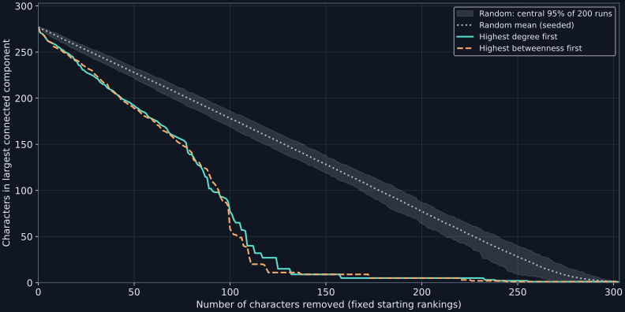

Week 03 · Who matters, and why · Go Nuts
Hubs or
bridges?
Does removing the highest-betweenness Marvel characters break up the Wikipedia network faster than removing the highest-degree characters?
One starting graph. Two frozen rankings. A seeded random baseline.
See what breaks ↓01 · Two meanings of important
Many neighbours, or a place on the route?
Degree counts a character’s distinct direct neighbours. A high-degree character is a hub. Betweenness counts how much a character lies on shortest routes between other pairs of characters. If a pair has several equally short routes, each route gets a share. A character can have few neighbours yet connect a part of the network that has no other way out.
We measure largest connected component (LCC): the largest remaining set in which every character can reach every other through links, ignoring arrow direction. Lower means a smaller connected core. Removing a node also deletes all its links.
02 · The experiment
Betweenness leads at 100 removals—but not everywhere.

| Removed | Degree-first | Betweenness-first | Random mean |
|---|---|---|---|
| 0 | 277 | 277 | 277.00 |
| 10 | 256 | 254 | 267.07 |
| 30 | 222 | 225 | 247.41 |
| 60 | 177 | 175 | 218.04 |
| 100 | 77 | 58 | 178.27 |
| 150 | 9 | 9 | 128.16 |
Our answer: at 100 removals, betweenness-first leaves 58 characters together, compared with 77 for degree-first: a core smaller by 19 characters. But at 30 removals degree-first leaves 222 versus 225, so there is no universal winner across all removal counts. Both targeted orders damage connectivity much faster than random removal over the main decline.
The starting largest component has 277 characters out of 303. At 100 removals, 203 characters remain overall: 145 lie outside the largest component for betweenness-first, compared with 126 for degree-first. The drop is therefore more than just the deletion of the 100 selected characters.
03 · Inspect the real links
Rockman: only two neighbours, but one is stranded without him.
In our frozen ordering, Rockman is 256th by degree (2 neighbours) and 59th by betweenness (normalized score 0.00605047). Ranks here are unique removal positions, with node-ID alphabetical tie-breaking—not shared statistical ranks.
| Source article | Links to |
|---|---|
| Rockman | Black Widow (Natasha Romanova) |
| Rockman | The Witness |
The Witness has exactly one undirected neighbour: Rockman. Black Widow connects Rockman to the larger component. Every shortest route from The Witness to the other 275 characters in that component must pass through Rockman. Removing Rockman alone isolates The Witness. Degree sees just two links; betweenness sees 275 pairs whose routes depend on those links.
This explains the measured disagreement from the actual frozen edge list. It does not claim that these characters are friends in the stories. Current Wikipedia pages may have changed; the frozen links are the evidence used here. Full rankings and case links are saved below.
04 · Fair comparison
Rank once, then start every experiment from scratch.
- Load all 303 nodes before adding 1,784 directed links. Keep 17 isolates and all smaller components.
- Merge either direction into one unweighted undirected edge. This gives 1,434 edges, no self-loops. We study connectivity when direction is ignored, not whether one article can reach another following arrows.
- Compute exact normalized betweenness and degree on this same full graph. Sort descending, with alphabetical node ID as the deterministic tie-break. Freeze both lists before deleting anything; do not recalculate centrality.
- For each order, copy the original graph, remove one character at a time, and record the LCC after every count from 0 to 303. Plot absolute node counts, so there is no changing denominator.
- Random baseline: shuffle the sorted list of all 303 nodes with Python Random seeds 20261123–20261322. Start each of the 200 runs from the original graph; remove without replacement. Some random removals hit isolates, which is part of this whole-network baseline.
Limitation: this is a fixed-ranking attack on one undirected Wikipedia snapshot. Re-ranking after each removal or retaining direction could change the outcome. Betweenness measures shortest-path brokerage, not an optimal fragmentation strategy; a high score does not guarantee the largest immediate split.
05 · Sources and reproducibility
Every number can be rerun.
Source: official course data, frozen 26 August 2026. Nodes are Marvel superhero articles; edges are article-text hyperlinks with redirects resolved, excluding shared navigation templates. We verified both local TSVs byte-for-byte against the official downloads. This post follows exercise 3.12’s removal-order investigation.
pip install -r scripts/requirements-week3.txt python scripts/analyse_week3.py # Optional isolated reproducibility check: python scripts/analyse_week3.py --output-dir /tmp/week3-check python -m http.server 8000
Run from the repository root, then open /weeks/week3/. The script verifies frozen input hashes, counts, isolates, monotonically shrinking components and remaining-node bounds. An independent BFS component counter checks both targeted strategies at nine removal counts. It also verifies Rockman’s two neighbours and The Witness’s single link. The analysis saves full random curves and software versions, not just the plot.
Analysis code · Pinned dependencies · All results and hashes · Chart data CSV · All rankings CSV · Nodes TSV
An AI coding agent wrote and ran the code, checked outputs, and drafted this post. These are AI-assisted checks, not independent group review. Read the AI methods record before presenting.
All weeks →